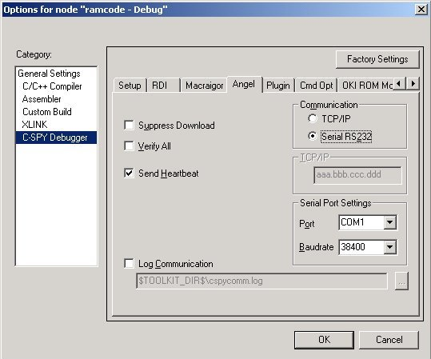
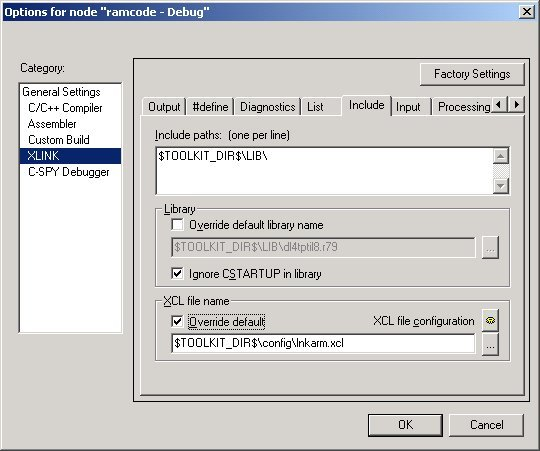

QuickStart reference for Angel ROM-monitors and JTAG interfaces
Getting started with the Angel evaluation board
Follow these instructions to set up a project for your evaluation board:
Example:
-
Connect the evaluation board to your host computer.
-
Start the IAR Embedded Workbench and create a new project, or open an existing project.
-
To use the Angel driver, open the project settings and select the Angel driver in the C-SPY Setup page.
Angel-specific options can now be set in the Angel page, shown in the picture below.
The Angel monitor always starts to communicate at 9600 baud, and then switches to the baudrate
specified in Serial Port Settings.

-
Make sure that you have a linker command file that matches your hardware. To select a linker command file, choose Project>Options
and go to the Include page of the XLINK category. Sample linker command
files can be found for a number of boards under the ...\arm\examples directory.
-
To setup your own linker file, select Override default and click the XCL file configuration button to enter the linker file configuration tool.

-
You can now start the debug session. Choose Project>Debug (or click
the C-SPY button on the toolbar) to download the code to the target
and start debugging.
Ready-made example projects:
-
Under the ...\arm\examples directory there is a number of ready
made projects for Angel evaluation boards. The readme.txt file
delivered with each project contains detailed information about the project.
Ready-made projects can be found for:
ARM Evaluator7t board
Atmel AT91EB40, AT91EB40A, AT91EB42, AT91EB55 and AT91EB63 boards
Cirrus Logic EDB7312 board
Copyright © 1999-2011 IAR Systems AB.